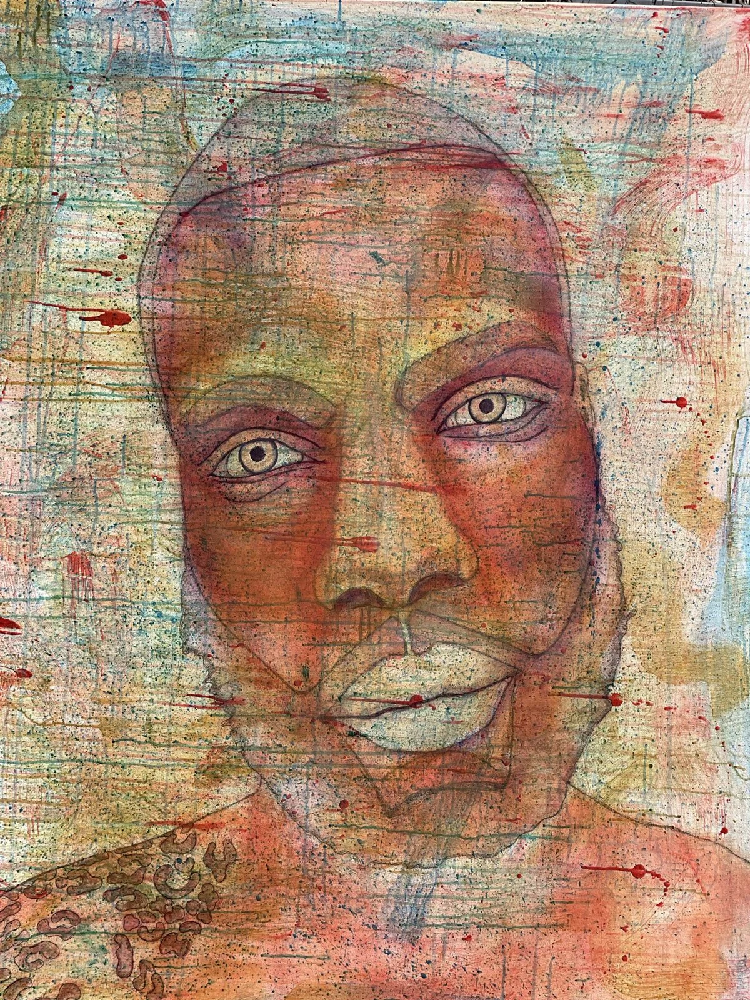

THE ARTIST / THE PRACTICE
Not one thing.
Never one layer.
I'm Uriel Alexander. I'm a visual artist based in the Bronx, and I like making paintings that give you something new to notice each time you look.

THE STORY IN THE WORK
It starts with paying attention.
I paint people, city scenes, and whatever else stays on my mind. I love a strong portrait. The eyes, the expression, the proportions—I want those details to feel right before I start pushing the color and composition.
I work in layers, often starting with acrylic and building on it with oil. Some areas stay close to real life; others become abstract, geometric, or a little surreal. I like that contrast. It's a big part of how I paint.
There's no one formula for my work. One painting might be about a face, another about a neighborhood, and the next might go somewhere completely different. That's how I want to keep growing.
IN THE STUDIO